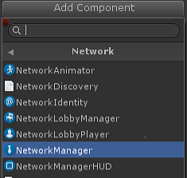
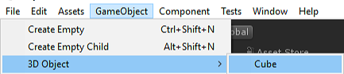
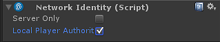
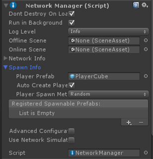
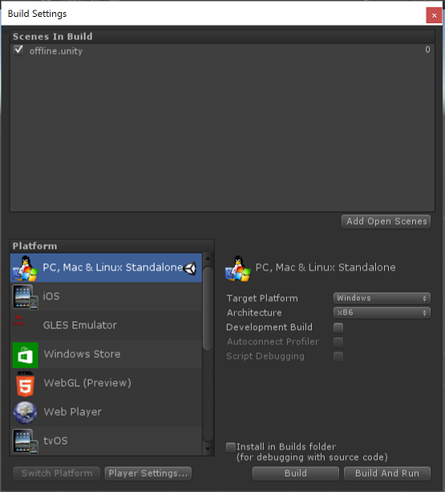
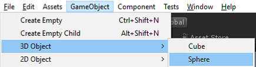
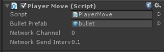

Setting up a Multiplayer Project from Scratch
This document describes steps to setup a new multiplayer project from nothing using the new networking system. This step-by-step process is generic, but can be customized for many types of multiplayer games once it is started.
To get started, create a new empty Unity project.
NetworkManager Setup
The first step is to create a NetworkManager object in the project:
- Add a new empty game object, from the menu Game Object -> Create Empty.
- Find the newly created object in the Hierarchy View and select it
- Rename the object to "NetworkManager" from the right-click context menu or by clicking on the object's name and typing.
- In the inspector window for the object, click the Add Component button
- Find the component Network -> NetworkManager and add it to the object. This component manages the network state of the game.

- Find the component Network -> NetworkManagerHUD and add it to the object. This component supplies a simple user interface in your game for controlling the network state.

For more details, see Using the NetworkManager.
Setup the Player Prefab
The next step is to setup the Unity Prefab that represents the player in the game. By default, the NetworkManager instantiates an object for each player by cloning the player prefab. In this example, the player object will be a simple cube.
- Create a new Cube from the menu Game Object -> 3D Object -> Cube

- Find the cube in the Hierarchy view and select it
- Rename the object to "PlayerCube"
- In the inspector window for the object click the Add Component button
- Add the component Network -> NetworkIdentity to the object. This component is used to identify the object between the server and clients.

- Set the "Local Player Authority" checkbox on the NetworkIdentity to true. This will allow the client to control the movement of the player object

- Make a prefab from the player cube object by dragging it into the Assets window. This will create a prefab called "PlayerCube"
- Delete the PlayerCube object from the scene - we don't need it now that we have a prefab
See Player Objects.
Register the Player Prefab
Once the player prefab is created, it must be registered with the network system.
- Find the NetworkManager object in the Heirarchy View and select it
- Open the "Spawn Info" foldout of the inspector for the NetworkManager
- Find the "Player Prefab" slot
- Drag the PlayerCube prefab into the "Player Prefab" slot

Now is a good time to save the project for the first time. From the menu File -> Save Project, save the project. You should also save the scene. Lets call this scene the "offline" scene.
Player Movement (Single Player Version)
The first piece of game functionality is to move the player object. This will first be done without any networking, so it will only work in a single-player mode.
- Find the PlayerCube prefab in the Asset view.
- Click the Add Component button and choose "New Script"
- Enter the name "PlayerMove" for the new script name. A new script will be created.
- Open this new script in an editor (such as Visual Studio) by double clicking it
- Add this simple movement code to the script:
using UnityEngine;
public class PlayerMove : MonoBehaviour
{
void Update()
{
var x = Input.GetAxis("Horizontal")*0.1f;
var z = Input.GetAxis("Vertical")*0.1f;
transform.Translate(x, 0, z);
}
}
This hooks up the cube to be controlled by the arrow keys or a controller pad. The cube only moves on the client right now - it is not networked.
Save the project again.
Test a Hosted Game
Enter play mode in the editor by clicking the play button. You should see the NetworkManagerHUD default user interface:
Press "Host" to start the game as the host of the game. This will cause a player object to be created, and the HUD will change to show the server is active. This game is running as a "host" - which is a server and a client in the same process.
See Network Concepts.
Pressing the arrow keys should make the player cube object move around.
Exit play mode by pressing the stop button in the editor.
Test Player Movement for a Client
- Use the menu File -> Build Settings to open the Build Settings dialog.
- Add the current scene to the build by pressing the "Add Open Scenes" button

- Create a build by pressing the "Build and Run" button. This will prompt for a name for the executable, enter a name such as "networkTest"
- A stand-alone player will launch, and show a resolution choice dialogue.
- Choose the "windowed" checkbox and a lower resolution such as 640x480
- The stand-alone player will start and show the NetworkManager HUD.
- Choose "Host" from the menu to start as a host. A player cube should be created
- Press the arrow keys to move the player cube around a little
- Switch back to the editor and close the Build Settings dialog.
- Enter play mode with the play button
- From the NetworkManagerHUD user interace, choose "LAN Client" to connect to the host as a client
- There should be two cubes, one for the local player on the host and one for the remote player for this client
- Press the arrow keys to move the cube around
- Both cube currently move! This because the movement script is not network-aware.
Make Player Movement Networked
- Close the stand-alone player
- Exit play mode in the editor
- Open the PlayerMove script.
- Update the script to only move the local player
- Add "using UnityEngine.Networking"
- Change "MonoBehaviour" to "NetworkBehaviour"
- Add a check for "isLocalPlayer" in the Update function, so that only the local player processes input
using UnityEngine;
using UnityEngine.Networking;
public class PlayerMove : NetworkBehaviour
{
void Update()
{
if (!isLocalPlayer)
return;
var x = Input.GetAxis("Horizontal")*0.1f;
var z = Input.GetAxis("Vertical")*0.1f;
transform.Translate(x, 0, z);
}
}
- Find the PlayerCube prefab in the Asset View and select
- Click the "Add Component" button and add the Networking -> NetworkTransform component. This component makes the object sychronize it's position across the network.

- Save the Project again
Test Multiplayer Movement
- Build and run the stand-alone player again and start as host
- Enter play mode in the editor and connect as a client
- The player objects should now move independently of each other, and are controlled by the local player on their client.
Identify Your Player
The cubes in the game are currently all white, so the user cannot tell which one is their cube. To identify the player, we will make the cube of the local player red.
- Open the PlayerMove script
- Add an implementation of the OnStartLocalPlayer function to change the player object's color.
public override void OnStartLocalPlayer()
{
GetComponent<MeshRenderer>().material.color = Color.red;
}
This function is only called on the local player on their client. This will make the user see their cube as red. The OnStartLocalPlayer function is a good place to do initialization that is only for the local player, such as configuring cameras and input.
There are also other useful virtual functions on the NetworkBehaviour base class. See Spawning.
- Build and run the game
- The cube controlled by the local player should now be red, while the others are still white.
Shooting Bullets (Not Networked)
A common feature in multiplayer games is to have player fire bullets. This section adds non-networked bullets to the example. Networking for bullets is added in the next section.
- Create a sphere game object

- Rename the sphere object to “Bullet”
- Change scale of the bullet from 1.o to 0.2
- Drag the bullet to the assets folder to make a prefab of the bullet
- Delete the bullet object from the scene
- Add a Rigidbody component to the bullet

- Set the "Use Gravity" checkbox on the rigidbody to false
- Update the PlayerMove script to fire bullets:
- Add a public slot for the bullet prefab
- Add input handling in Update() function
- Add a function to fire a bullet
using UnityEngine;
using UnityEngine.Networking;
public class PlayerMove : NetworkBehaviour
{
public GameObject bulletPrefab;
public override void OnStartLocalPlayer()
{
GetComponent<MeshRenderer>().material.color = Color.red;
}
void Update()
{
if (!isLocalPlayer)
return;
var x = Input.GetAxis("Horizontal")*0.1f;
var z = Input.GetAxis("Vertical")*0.1f;
transform.Translate(x, 0, z);
if (Input.GetKeyDown(KeyCode.Space))
{
Fire();
}
}
void Fire()
{
// create the bullet object from the bullet prefab
var bullet = (GameObject)Instantiate(
bulletPrefab,
transform.position - transform.forward,
Quaternion.identity);
// make the bullet move away in front of the player
bullet.GetComponent<Rigidbody>().velocity = -transform.forward*4;
// make bullet disappear after 2 seconds
Destroy(bullet, 2.0f);
}
}
- Save the script and return to the editor
- Select the PlayerCube prefab and find the PlayerMove component
- Find the bulletPrefab slot on the component
- Drag the bull prefab into the bulletPrefab slot

- Make a build then start the stand-alone player as the host
- Enter play mode in the editor and connect as a client
- Pressing the space bar should cause a bullet to be created and fired from the player object
- The bullet is not fired on other clients, only the one where the space bar was pressed.
Shooting Bullets with Networking
This section adds networking to the bullets in the example.
- Find the bullet prefab and select it
- Add NetworkIdentity to the bullet prefab
- Add NetworkTransform component to the bullet prefab
- Set the send rate to zero on the NetworkTransform component on the bullet prefab. The bullet doesnt change direction or velocity after it is shot, so it does not need to send movement updates.

- Select the NetworkManager and open the “Spawn Info” foldout
- Add a new spawn prefab with the plus button
- Drag the Bullet prefab into the new spawn prefab slot

- Open the PlayerMove script
- Update the PlayerMove script to network the bullet:
- Change the Fire function to be a networked command, by adding the [Command] custom attribute and the "Cmd" prefix
- Use Network.Spawn() on bullet object
using UnityEngine;
using UnityEngine.Networking;
public class PlayerMove : NetworkBehaviour
{
public GameObject bulletPrefab;
public override void OnStartLocalPlayer()
{
GetComponent<MeshRenderer>().material.color = Color.red;
}
[Command]
void CmdFire()
{
// This [Command] code is run on the server!
// create the bullet object locally
var bullet = (GameObject)Instantiate(
bulletPrefab,
transform.position - transform.forward,
Quaternion.identity);
bullet.GetComponent<Rigidbody>().velocity = -transform.forward*4;
// spawn the bullet on the clients
NetworkServer.Spawn(bullet);
// when the bullet is destroyed on the server it will automaticaly be destroyed on clients
Destroy(bullet, 2.0f);
}
void Update()
{
if (!isLocalPlayer)
return;
var x = Input.GetAxis("Horizontal")*0.1f;
var z = Input.GetAxis("Vertical")*0.1f;
transform.Translate(x, 0, z);
if (Input.GetKeyDown(KeyCode.Space))
{
// Command function is called from the client, but invoked on the server
CmdFire();
}
}
}
This code uses a [Command] to fire the bullet on the server. For more information see Networked Actions.
- Make a build then start the stand-alone player as the host
- Enter play mode in the editor and connect as a client
- Pressing the space bar should make bullet fire for the correct player (only) on all clients
Bullet Collisions
This adds a collision handler so that bullets will disappear when they hit a player cube object.
- Find the bullet prefab and select it
- Choose the Add Component button and add a new script
- Call the new script "Bullet"
- Open the new script and add the collision handler that destroys the bullet when it hits a player object
using UnityEngine;
public class Bullet : MonoBehaviour
{
void OnCollisionEnter(Collision collision)
{
var hit = collision.gameObject;
var hitPlayer = hit.GetComponent<PlayerMove>();
if (hitPlayer != null)
{
Destroy(gameObject);
}
}
}
Now when a bullet hits a player object it will be destroyed. When the bullet on the server is destroyed, since it is a spawned object managed by the network, it will be destroyed on clients too.
Player State (Non-Networked Health)
A common feature related to bullets is that the player object has a "health" property that starts at a full value and then is reduced when the player takes damage from a bullet hitting them. This section adds non-networked health to the player object.
- Select the PlayerCube prefab
- Choose the Add Component button and add a new script
- Call the script "Combat"
- Open the Combat script, add the health variables and TakeDamage function
using UnityEngine;
public class Combat : MonoBehaviour
{
public const int maxHealth = 100;
public int health = maxHealth;
public void TakeDamage(int amount)
{
health -= amount;
if (health <= 0)
{
health = 0;
Debug.Log("Dead!");
}
}
}
The bullet script needs to be updated to call the TakeDamage function on a hit.
- Open the bullet script
- Add a call to TakeDamage() from the Combat script in the collision handler function
using UnityEngine;
public class Bullet : MonoBehaviour
{
void OnCollisionEnter(Collision collision)
{
var hit = collision.gameObject;
var hitPlayer = hit.GetComponent<PlayerMove>();
if (hitPlayer != null)
{
var combat = hit.GetComponent<Combat>();
combat.TakeDamage(10);
Destroy(gameObject);
}
}
}
This will make health on the player object go down when hit by a bullet. But you cannot see this happening in the game. We need to add a simple health bar.
- Select the PlayerCube prefab
- Choose the Add Component button and add a new script called HealthBar
- Open the HealthBar script
This is a lot of code that uses the old GUI system. This is not very relevant for networking so we'll just use it without explaination for now.
using UnityEngine;
using System.Collections;
public class HealthBar : MonoBehaviour
{
GUIStyle healthStyle;
GUIStyle backStyle;
Combat combat;
void Awake()
{
combat = GetComponent<Combat>();
}
void OnGUI()
{
InitStyles();
// Draw a Health Bar
Vector3 pos = Camera.main.WorldToScreenPoint(transform.position);
// draw health bar background
GUI.color = Color.grey;
GUI.backgroundColor = Color.grey;
GUI.Box(new Rect(pos.x-26, Screen.height - pos.y + 20, Combat.maxHealth/2, 7), ".", backStyle);
// draw health bar amount
GUI.color = Color.green;
GUI.backgroundColor = Color.green;
GUI.Box(new Rect(pos.x-25, Screen.height - pos.y + 21, combat.health/2, 5), ".", healthStyle);
}
void InitStyles()
{
if( healthStyle == null )
{
healthStyle = new GUIStyle( GUI.skin.box );
healthStyle.normal.background = MakeTex( 2, 2, new Color( 0f, 1f, 0f, 1.0f ) );
}
if( backStyle == null )
{
backStyle = new GUIStyle( GUI.skin.box );
backStyle.normal.background = MakeTex( 2, 2, new Color( 0f, 0f, 0f, 1.0f ) );
}
}
Texture2D MakeTex( int width, int height, Color col )
{
Color[] pix = new Color[width * height];
for( int i = 0; i < pix.Length; ++i )
{
pix[ i ] = col;
}
Texture2D result = new Texture2D( width, height );
result.SetPixels( pix );
result.Apply();
return result;
}
}
- Save the project
- Build and Run the game and see health bar on the player object
- If a player shoots another player now, the health goes down on that particular client, but not on other clients.
Player State (Networked Health)
Changes to health are being applied everywhere now - independently on the client and host. This allows health to look different for different players. Health should only be applied on the server and the changes replicated to clients. We call this "server authority" for health.
- Open the Combat script
- Change script to be a NetworkBehaviour
- Make health a [SyncVar]
- Add isServer check to TakeDamage, so it will only be applied on the server
For more information on SyncVars, see State Synchronization.
using UnityEngine;
using UnityEngine.Networking;
public class Combat : NetworkBehaviour
{
public const int maxHealth = 100;
[SyncVar]
public int health = maxHealth;
public void TakeDamage(int amount)
{
if (!isServer)
return;
health -= amount;
if (health <= 0)
{
health = 0;
Debug.Log("Dead!");
}
}
}
Death and Respawning
Currently, nothing currently happens when the health of a player reaches zero except a log message. To make it more of a game, when health reaches zero, the player should be teleported back to the starting location with full health.
- Open the Combat script
- Add a [ClientRpc] function to respawn the player object. For more information see Networked Actions.
- Call the respawn function on the server when health reaches zero
using UnityEngine;
using UnityEngine.Networking;
public class Combat : NetworkBehaviour
{
public const int maxHealth = 100;
[SyncVar]
public int health = maxHealth;
public void TakeDamage(int amount)
{
if (!isServer)
return;
health -= amount;
if (health <= 0)
{
health = maxHealth;
// called on the server, will be invoked on the clients
RpcRespawn();
}
}
[ClientRpc]
void RpcRespawn()
{
if (isLocalPlayer)
{
// move back to zero location
transform.position = Vector3.zero;
}
}
}
In this game, the client controls the position of the player object - the player object has "local authority" on the client. If the server just set the player's position to the start position, it would be overridden by the client, since the client has authority. To avoid this, the server tells the owning client to move the player object to the start position.
- Build and run the game
- Move the player objects away from the start position
- Shoot bullets at one player until their health reaches zero
- The player object should teleport to the starting position.
Non-Player Objects
While player objects are spawned when client connect to the host, most games have non-player objects that exist in the game world, such as enemies. In this section a spawner is added that creates non-player objects that can be shot and killed.
- From the GameObject menu create a new empty game object
- Rename this object to "EnemySpawner"
- Select the EnemySpawner object
- Choose the Add Component button and add a NetworkIdentity to the object
- In the NetworkIdentity click the "Server Only" checkbox. This makes the spawner not be sent to clients.
- Choose the Add Component button and create a new script called "EnemySpawner"
- Edit the new script
- Make it a NetworkBehaviour
- Implement the virtual function OnStartServer to create the enemies
using UnityEngine;
using UnityEngine.Networking;
public class EnemySpawner : NetworkBehaviour {
public GameObject enemyPrefab;
public int numEnemies;
public override void OnStartServer()
{
for (int i=0; i < numEnemies; i++)
{
var pos = new Vector3(
Random.Range(-8.0f, 8.0f),
0.2f,
Random.Range(-8.0f, 8.0f)
);
var rotation = Quaternion.Euler( Random.Range(0,180), Random.Range(0,180), Random.Range(0,180));
var enemy = (GameObject)Instantiate(enemyPrefab, pos, rotation);
NetworkServer.Spawn(enemy);
}
}
}
Now create an Enemy prefab:
- From the GameObject menu create a new Capsule.
- Rename the object to "Enemy"
- Choose the Add Component button add a NetworkIdentity component to the Enemy
- Choose the Add Component button add a NetworkTransform component to the Enemy
- Drag the Enemy object into the Asset view to create a prefab
- there should be a prefab asset now called "Enemy"
- Delete the Enemy object from the scene
- Select the Enemy prefab
- Choose the Add Component button and add the Combat script to the Enemy
- Choose the Add Component button and add the HealthBar script to the Enemy
- Select the NetworkManager and in Spawn Info add a new spawnable prefab
- Set the new spawn prefab to the Enemy Prefab
The bullet script was setup to only work for players. Now update the bullet script to work with any object that has the Combat script on it:
- Open the Bullet script
- Change the collision check to use Combat instead of PlayerMove:
using UnityEngine;
public class Bullet : MonoBehaviour
{
void OnCollisionEnter(Collision collision)
{
var hit = collision.gameObject;
var hitCombat = hit.GetComponent<Combat>();
if (hitCombat != null)
{
hitCombat.TakeDamage(10);
Destroy(gameObject);
}
}
}
Hookup the EnemySpawner with the Enemy object:
- Select the EnemySpawner object
- Find the "Enemy" slot on the EnemySpawner component
- Drag the Enemy prefab into the slot
- Set the numEnemies value to 4
Test Enemies:
- Build and run the game
- When starting as Host, four enemies should be created at random locations
- The player should be able to shoot enemies, and their health should go down
- When the client joins they should see the enemies in the same positions, and same health values as on the server
Destroying Enemies
While the enemies can be shot by bullets and their health goes down, then respawn like players. Enemies should be destroyed when their health reaches zero instead of respawning.
- Open the Combat script
- Add a "destroyOnDeath" variable
- Check destroyOnDeath when health reaches zero
using UnityEngine;
using UnityEngine.Networking;
public class Combat : NetworkBehaviour
{
public const int maxHealth = 100;
public bool destroyOnDeath;
[SyncVar]
public int health = maxHealth;
public void TakeDamage(int amount)
{
if (!isServer)
return;
health -= amount;
if (health <= 0)
{
if (destroyOnDeath)
{
Destroy(gameObject);
}
else
{
health = maxHealth;
// called on the server, will be invoked on the clients
RpcRespawn();
}
}
}
[ClientRpc]
void RpcRespawn()
{
if (isLocalPlayer)
{
// move back to zero location
transform.position = Vector3.zero;
}
}
}
- Select the Enemy prefab
- Set the destroyOnDeath checkbox to true for the Enemy
Now the enemy will be destroyed when health reaches zero, but players will respawn.
Spawn Positions for players
Players currently all appear at the zero point when they are created. This means that they are potentially on top of each other. Player should spawn at different locations. The NetworkStartPosition component can be used to do this.
- Create a new empty GameObject
- Rename the object to "Pos1"
- Choose the Add Component button and add the NetworkStartPosition component
Move the Pos1 object to the position (-3,0,0)
Create a second empty GameObject
- Rename the object to "Pos2"
- Choose the Add Component button and add the NetworkStartPosition component
Move the Pos2 object to the position (3,0,0)
Find the NetworkManager and select it.
- Open the "Spawn Info" foldout
Change the "Player Spawn Method" to "Round Robin"
Build and run the game
- Player objects should now be created at the locations of the Pos1 and Pos2 objects instead of at zero.